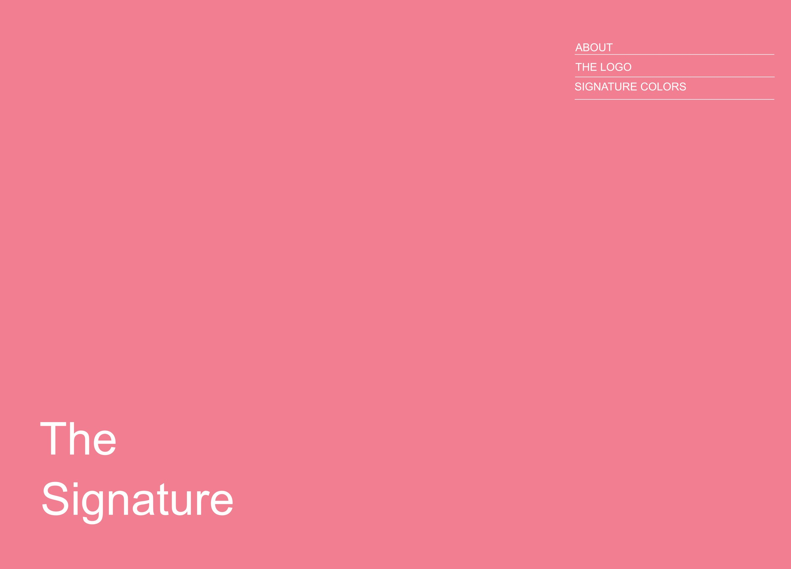
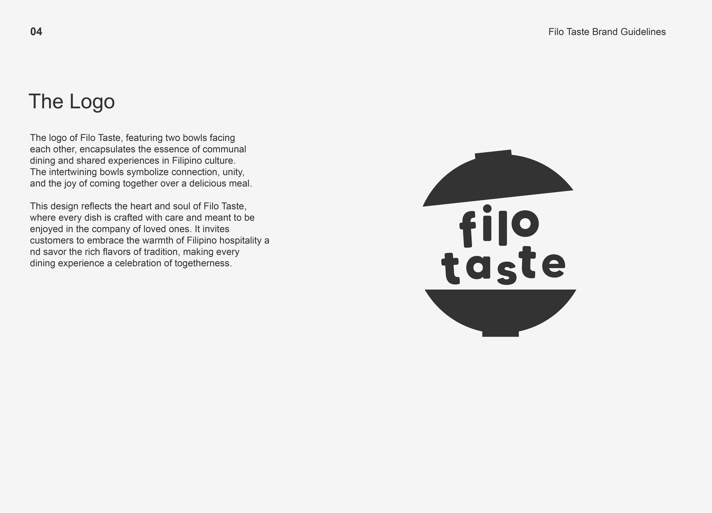
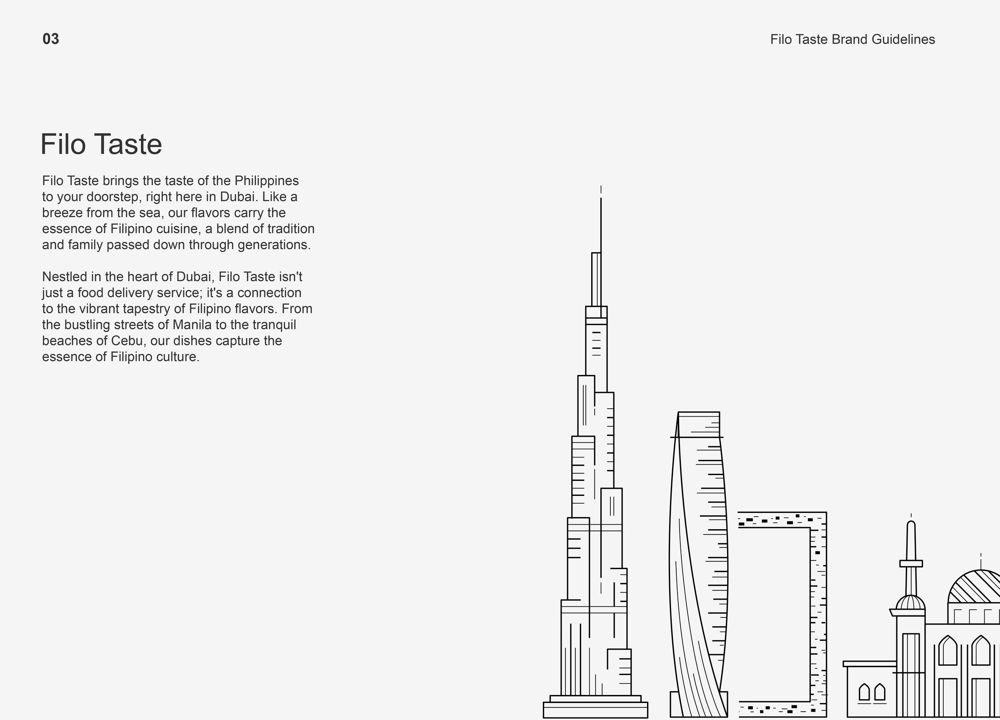
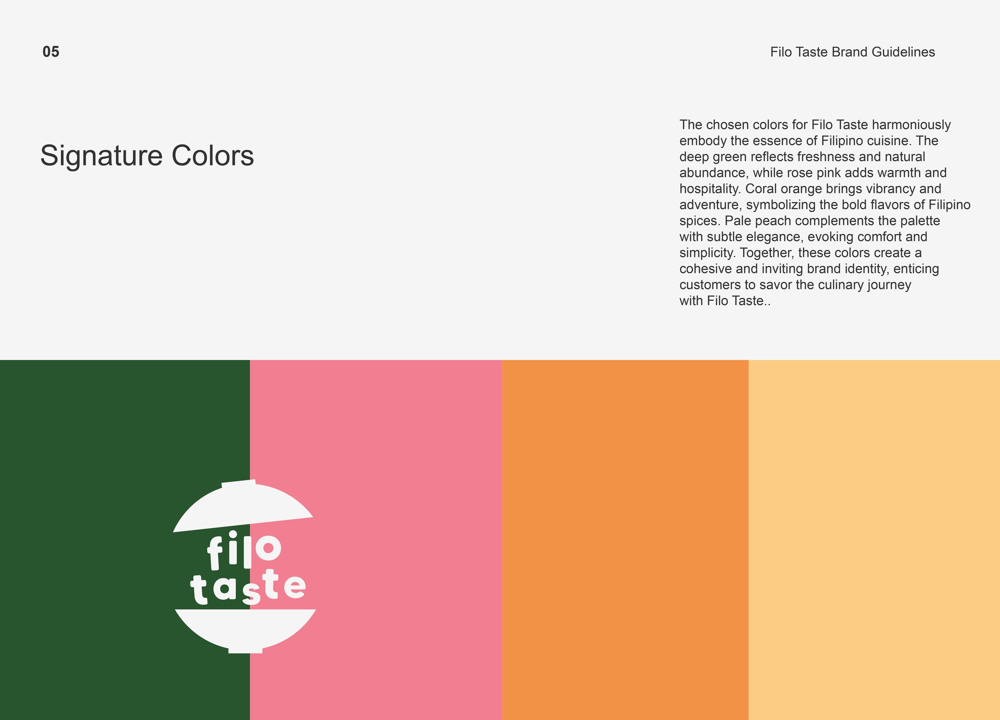
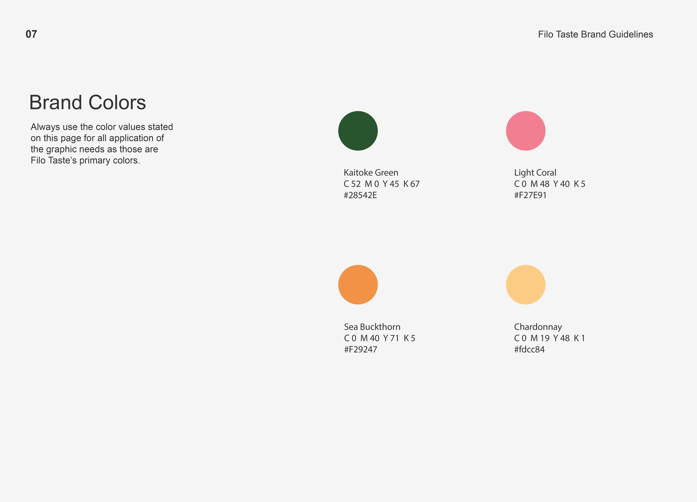
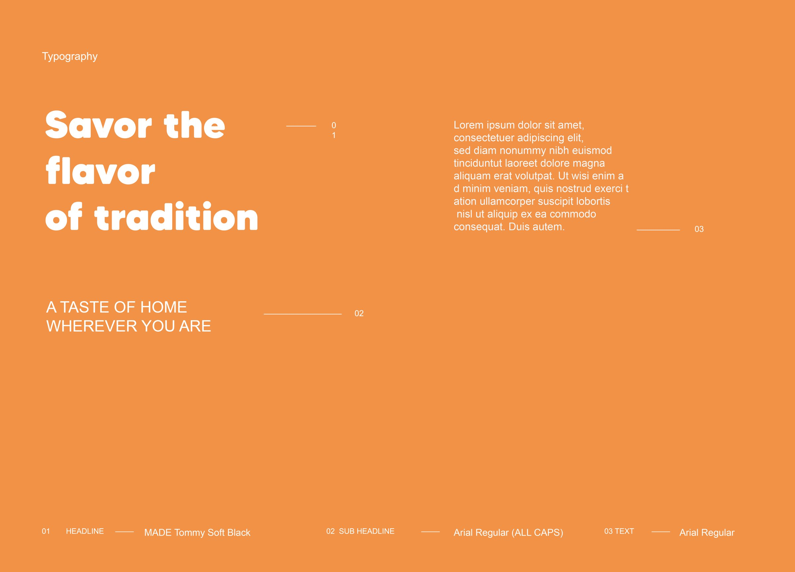

FILO TASTE
Brand guidelines for a Filipino food delivery brand in Dubai. Click a page to view it full size.






Brand guidelines for a Filipino food delivery brand in Dubai. Click a page to view it full size.





